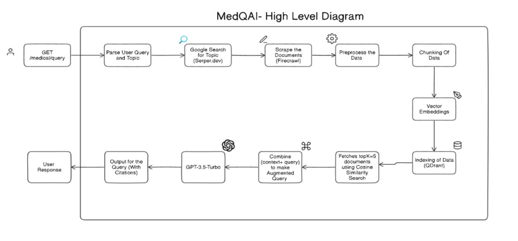

MedQAI - Real-Time Medicine Assistant
- Backend: Python, Flask
- Model: GPT-4 Mini with RAG (Retrieval-Augmented Generation)
- Frontend: HTML, CSS, JavaScript
MedQAI is an intelligent real-time medicine assistant designed to respond to medical queries using a specialized GPT-4 Mini model. The system is capable of dynamically retrieving verified data from trusted medical sources such as PubMed and WebMD. By integrating web scraping, fine-tuning, and advanced NLP pipelines, MedQAI ensures users receive accurate and relevant medical information on demand.
Key Features
- Dynamic Data Retrieval: Develop a system capable of fetching real-time medical information from trusted sources.
- Efficient Query Processing: Handle complex medical inquiries with accuracy and relevance.
- Leverage Qdrant for Vector Search: Utilize Qdrant to store and retrieve pre-indexed medical data quickly.
- Integration of RAG Framework: Combine contextual data retrieval with GPT-4 Mini's generative abilities using a Retrieval-Augmented Generation (RAG) approach.
- Unique Approach: Implement real-time web scraping and integrate search engine capabilities with reliable medical sources.

